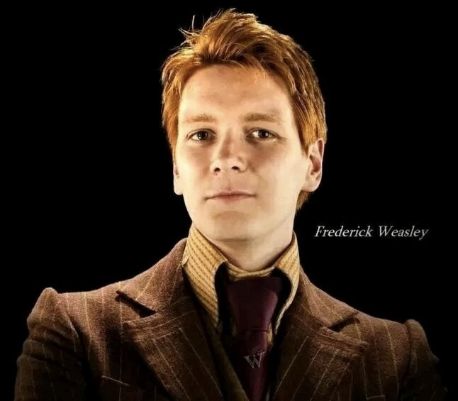

弗雷德・韦斯莱(Fred・Weasley) |
|
|---|---|
| 弗雷德・韦斯莱（Fred Weasley，1978年4月1日―1998年5月2日），男，小说《哈利・波特》系列中的角色。弗雷德是韦斯莱家的男孩子，幽默搞笑（甚至牺牲之前都在笑），拥有韦斯莱家的特征：满头红发和雀斑，与乔治是双胞胎兄弟，二人长的十分相似，连表情都相似。于1998年5月2日在霍格沃茨大战被食死徒奥古斯特・卢克伍德等人引发的巨大爆炸所杀。终年20岁。 |  |
中文名 弗雷德・韦斯莱 |
生 日 1978年4月1日 |
| 外文名 Fred Weasley | 年 龄 终年20岁 |
| 饰 演 詹姆斯・菲尔普斯 | 血 统 纯血 |
| 性 别 男 | 毕业学院 格兰芬多 |
| 登场作品 哈利・波特 | 去世日期 1998年5月2日 |
| 守护神 喜鹊 |
| 在学生中，韦斯莱兄弟的口碑非常好。在霍格沃茨最“黑暗”的日子里，韦斯莱兄弟的发明曾帮助很多学生摆脱了乌姆里奇的压迫。他们仍然很愿意为韦斯莱兄弟在对角巷开办的商店掏空自己的腰包。很多想成为霍格沃茨恶作剧大王的学生以韦斯莱兄弟的行为作为准则。而且，韦斯莱兄弟曾让霍格沃茨最富有恶作剧天赋的皮皮鬼给他们行了礼 ，这是霍格沃茨历史上没有人能做到的事 。 | （韦斯莱双子星） |